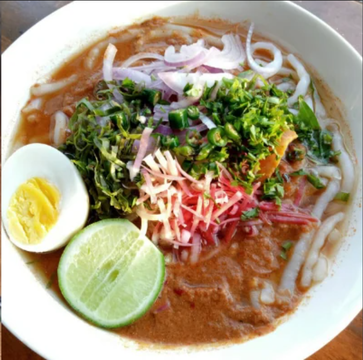
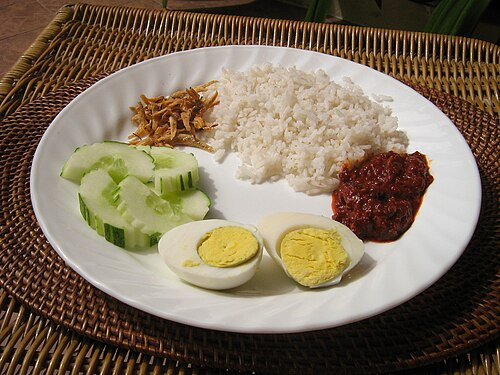
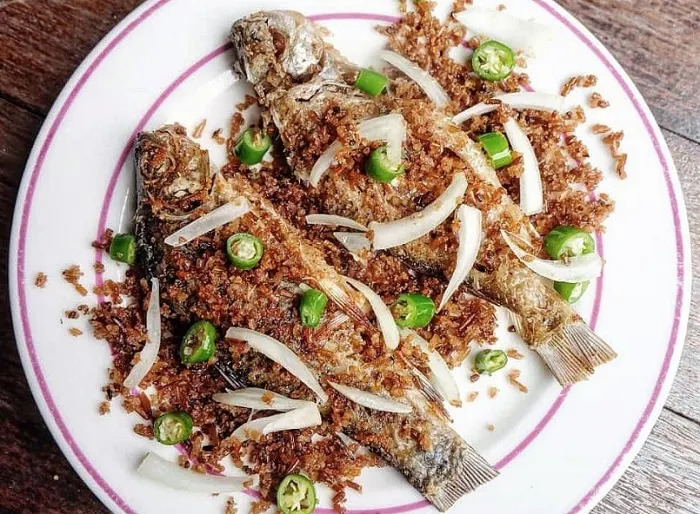
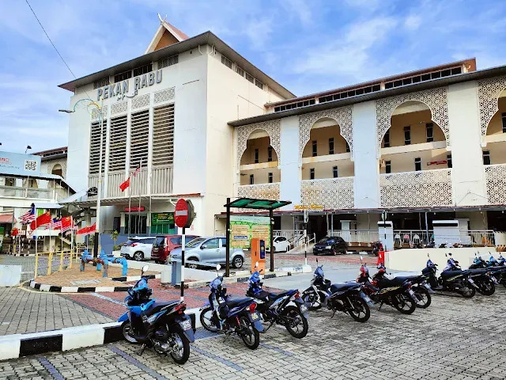

Noodles in a tangy mackerel, tamarind and herb gravy, garnished with cucumber and onions.

A northern twist on the national dish, with yellow-hued rice, varied curries and fried chicken. Source: The Sun Malaysia

Traditional fermented freshwater fish, showing how rural Kedahan communities preserved their catch.

"Wednesday Market": a multi-storey complex open all week, famed for Malay handicrafts, snacks and kuih.